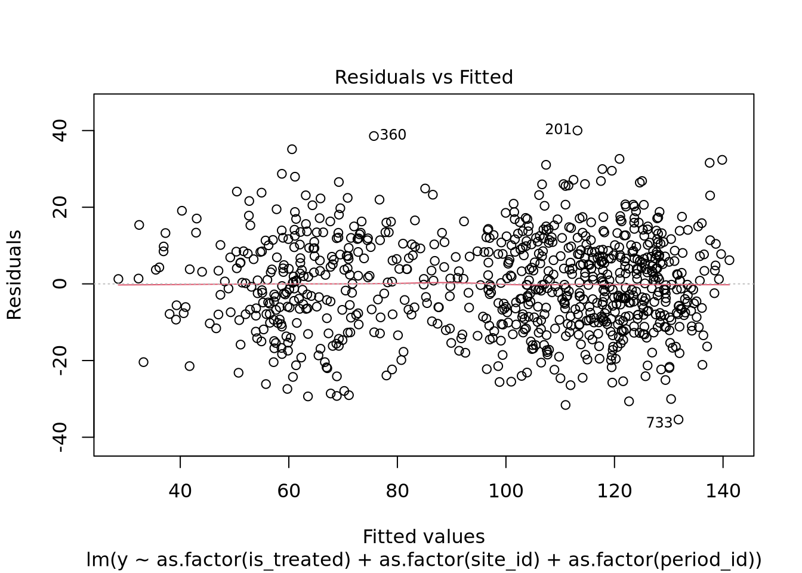
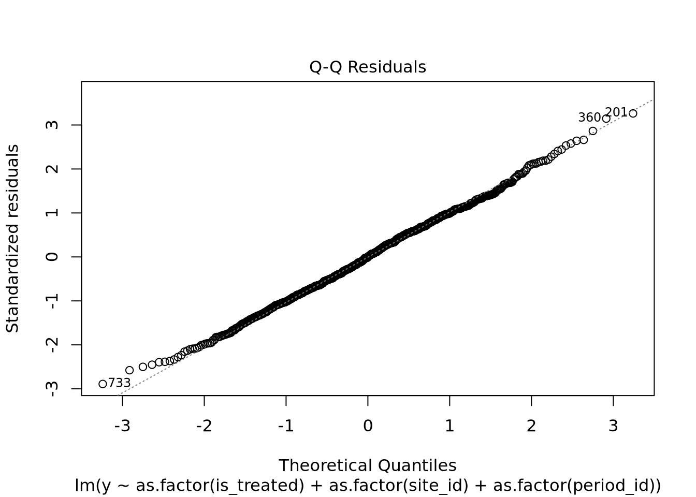
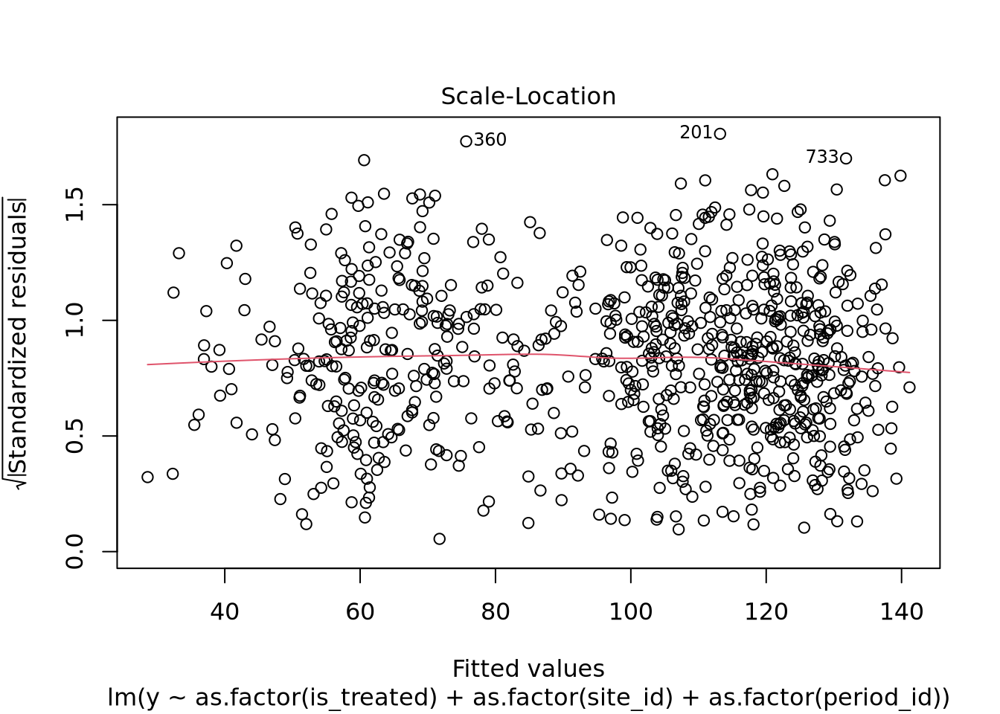
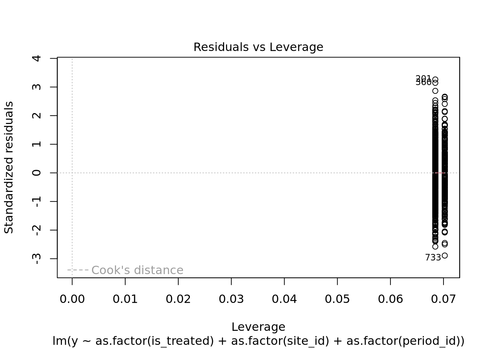
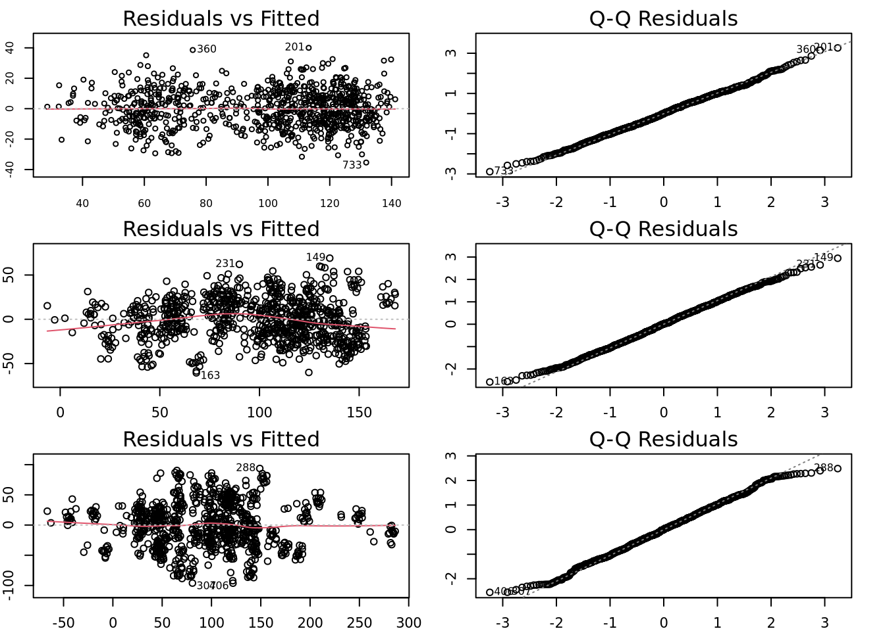

In a recent project (LTN25), I worked with a dataset comprising daily traffic counts at various sites across a borough, collected in two waves. The first wave was gathered in November 2021, and the second in November 2023. Each wave includes seven consecutive days of traffic counts for all sites. Between the two waves, the borough implemented three Low Traffic Neighbourhood (LTN) schemes, which affected traffic volumes at some of these sites. We employed a difference-in-differences (DiD) approach to analyse the policy’s impact and fitted a two-way fixed effects (TWFE) model to the traffic data to estimate the treatment effect on the treated (referred to as the treatment effect hereafter for simplicity).
This dataset violates key assumptions of the TWFE model, particularly the requirement for independent and identically distributed (i.i.d.) error terms. Correlation arises because traffic counts at the same sites are repeatedly measured over consecutive days. For example, if engineering works occurred near a site during one measurement wave, all traffic counts at that site during the same wave could be suppressed. Since the model does not include a fixed effect for the occurrence of engineering works, the relevant effects manifest as correlated residuals (error terms).
This post examines how such repeated measurements impact TWFE estimation and explores cluster-robust standard errors as a solution to address these issues.
\(y_{i,t}\) is the outcome variable for individual \(i\) at time \(t\);
\(\alpha^{base}\) is the base effect;
\(\alpha^{site}_{i}\) is the site fixed effect;
\(\alpha^{time}_{t}\) is the time fixed effect;
\(D_{i,t}\) is the treatment indicator (1 if site \(i\) is treated at time \(t\), 0 otherwise);
\(\beta\) is the treatment effect;
\(\epsilon_{i,t}\) is the error term, assumed to be i.i.d.normal.
We now specify a data generating process for a panel data composed of 30 sites and 28 time periods. The sites are indexed by \(i = 1, \ldots, 30\) and the time periods by \(t = 1, \ldots, 28\). The outcome variable \(y_{i,t}\) denotes the traffic volume at site \(i\) at time \(t\). The frist 20 sites are assigned to treatment group and the rest to the control group. The treatment is applied at time \(t = 15\) for the treated sites, and the control sites are never treated. So, the treatment indicator \(D_{i,t}\) is defined as follows:
\[
D_{i,t} =
\begin{cases}
1 & \text{if } i \leq 20 \text{ and } t \geq 15, \\
0 & \text{otherwise}.
\end{cases}
\]
The parameters are specified as follows:
\(\alpha^{base} = 100\);
\(\alpha^{site}_{i} = i\) for \(i = 1, \ldots, 30\) (i.e., the site fixed effects are simply the site indices);
\(\alpha^{time}_{t} = -20\) when \(t\) is a multiple of seven (i.e., \(t = 7, 14, 21, 28\)) and \(0\) otherwise;
OLS recovers the true parameters with reasonably high precision.
We call four diagnostic plots for the estimated model. The aim is not to check whether the model satisfies the OLS assumptions—we already know it does, as the data was simulated to meet these conditions. Instead, we use these plots to illustrate how diagnostic plots appear when the model is correctly specified.
where: - \(\epsilon^{cluster}_{c}\) is the cluster-level error term, assumed to be i.i.d. normal across clusters; - \(\epsilon^{individ}_{i,t}\) is the individual-level error term, assumed to be i.i.d. normal across sites and time.
We now specify 60 clusters for this dataset. The sample points of each site are assigned to two clusters depending on whether are collected before or after the treatment. The clusters are indexed by \(c = 1, \ldots, 60\).
The treatment effect is recovered. However, the standard error increases compared to the previous dataset (see Section 2.1.2).
The estimates of site and time fixed effects are not all reliable.
The overall model fit (\(R^2\)) declines relative to the previous dataset.
In the following section, we analyse the residuals of the estimated model to illustrate violations of the OLS assumptions.
3.1.3 Diagnostics
plot(mdl)




These plots appear to acceptable, because the cluster-level errors are relatively small. We repeat the simulation, estimation, and diagnostic procedures for two additional datasets in which the standard deviations of the cluster-level error terms are increased to 30 and 50, respectively.
The residual vs. fitted values plots show increasingly clear patterns of clustering as the standard deviation increases. In particular, when the standard deviation of the cluster-level error term is 50, the residuals are visibly clustered. The QQ plots further indicate that the residuals deviate from normality.
To facilitate visual comparison, these plots are organised in a grid layout:
par(mfrow =c(3, 2), mar =c(2, 2, 2, 2))plot(mdl, which =1,cex =0.75, # Point sizecex.lab =0.75, # Axis labelscex.axis =0.75, # Tick labelscex.main =0.5# Title size)plot(mdl, which =2) # QQ Plotplot(mdl2, which =1)plot(mdl2, which =2)plot(mdl3, which =1)plot(mdl3, which =2)

We now focus on the treatment effect estimates. The table below summarises the estimated coefficients and their corresponding standard errors for each dataset.
The results show that only when the standard deviation of the cluster-level error term is 10, the conventional OLS estimation successfully recovers the treatment effect—that is, the true value of \(\beta\) lies within the 95% confidence interval. As the cluster-level error variance increases, standard errors are underestimated, and inference becomes unreliable. ### Estimation: cluster robust standard error
We reuse the previously estimated models and compute cluster-robust standard errors, which are robust to correlation of error terms within clusters. The clubSandwich package in R is used to compute these standard errors.
library(clubSandwich)
Registered S3 method overwritten by 'clubSandwich':
method from
bread.mlm sandwich
# Compute cluster robust variance-covariance matrixcrVarCov =vcovCR(mdl, cluster = df.tc$cluster_id, type ="CR2")crVarCov2 =vcovCR(mdl2, cluster = df.tc$cluster_id, type ="CR2")crVarCov3 =vcovCR(mdl3, cluster = df.tc$cluster_id, type ="CR2")# Compute standard error for all coefficientsest =coef_test(mdl, vcov = crVarCov)est2=coef_test(mdl2, vcov = crVarCov2)est3=coef_test(mdl3, vcov = crVarCov3)print(est)
We again focus on the treatment effect estimates. For ease of comparison, we extend the previous table to include the cluster-robust standard errors and their associated 95% confidence intervals. Notably, the true treatment effect, \(\beta\), lies within the 95% confidence interval for all three datasets.
This post explores how repeated measurements can jeopardise TWFE estimation. We show that conventional OLS estimation is not reliable when error terms are correlated due to repeated measurements. In our numerical experiments, the model only recovered the true treatment effect when the correlation was minor—that is, when the standard deviation of the cluster-level error term was small.
The findings of this experiment are pedagogically valuable. They reveal the limitations of OLS estimation in the presence of correlated error terms. More importantly, they highlight that panel data with long time series may not contain as much independent information as we might assume. Many data points in these datasets may be repeated measurements and, as such, carry similar information. They contribute little to improving the precision of OLS estimates. In fact, they can inflate standard errors, leading to misleadingly narrow confidence intervals and potentially incorrect conclusions.